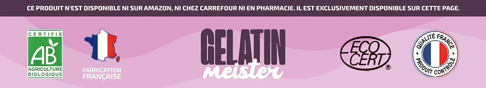

Qu’est-ce que Gelatin Meister et comment agit-il ?
Il s’agit d’un complément alimentaire en gélules, Gelatin Meister, que la marque qualifie de formule minceur naturelle. Il est conçu pour accompagner la gestion du poids, le métabolisme et le contrôle de l’appétit, en complément d’une alimentation équilibrée. Le produit vise les adultes qui veulent un soutien facile à intégrer, en plus de leurs habitudes alimentaires. Le fabricant rappelle que la gélule accompagne une démarche d’ensemble et n’agit pas seule.
Son nom ne doit pas induire en erreur, car l’étiquette annonce un complément à base de chrome et de plantes, sans gélatine en poudre. On compte 30 gélules dans chaque flacon, pour un mois de prise.
Le produit réunit onze ingrédients, du chrome et du thé vert jusqu’au lilas des Indes et au resvératrol. Le site affirme que chaque ingrédient a été sélectionné et dosé pour favoriser son absorption. Le site insiste sur l’absence de produits chimiques nocifs et d’additifs artificiels, pour un usage sur la durée.
Le site s’appuie d’abord sur le chrome, qui participe à un métabolisme normal des macronutriments. Le thé vert, le piment et l’orange amère visent le métabolisme, le gingembre et la cannelle le confort digestif.
Le fabricant annonce moins de fringales en deux à trois semaines et recommande au moins trois mois de cure.
L’étiquette mentionne un distributeur européen à Dublin et une adresse de retour à Moordrecht, aux Pays-Bas. Les informations obligatoires sont imprimées en français sur l’étiquette, avec la composition, le mode d’emploi et les avertissements. L’étiquette annonce un poids net de 17,01 g.
Rappelons que Gelatin Meister n’a pas vocation à diagnostiquer, traiter, guérir ou prévenir une maladie. Il ne prend pas la place d’un régime varié, et l’expérience de chacun peut différer.
Gelatin Meister – Ingrédients
La composition par gélule, telle qu’elle figure sur le flacon, est la suivante :
Chrome (250 % des VNR) : lié au métabolisme normal des macronutriments.
Extrait de feuille de thé vert (154 mg) : une plante riche en catéchines, associée au métabolisme.
Vinaigre de cidre, 150 mg : présenté par la marque comme un soutien de la digestion.
Berbérine HCl (85 mg) : substance végétale utilisée traditionnellement.
50 mg de gingembre et 20 mg de cannelle : deux épices de tradition digestive.
Extraits complémentaires : orange amère, Cayenne, lilas des Indes, ginseng coréen et resvératrol, chacun dosé sur l’étiquette.
La renouée du Japon fournit le resvératrol, tandis que l’orange amère est une source de synéphrine. Les autres composants sont la gélule végétale, de la cellulose microcristalline et des anti-agglomérants.
Comme les doses sont données par gélule, il est simple de savoir exactement ce que l’on prend chaque jour. Le tableau ne donne une VNR que pour le chrome ; les plantes n’en ont pas. Le thé vert et l’orange amère donnent à la formule un caractère actif qui demande de respecter les précautions.
Gelatin Meister – Effets secondaires
Gelatin Meister serait bien toléré dans la majorité des cas, d’après la marque. Les rares effets mentionnés sont légers, comme des variations digestives pendant l’adaptation.
La formule contient toutefois des ingrédients actifs, comme le thé vert, l’orange amère et le piment de Cayenne, auxquels certaines personnes peuvent être sensibles. Respecter strictement la dose dès le départ aide à observer comment le corps réagit les premiers jours. Les mineurs et les femmes enceintes ou qui allaitent ne doivent pas l’utiliser, et la dose doit être respectée.
L’étiquette demande aux diabétiques et aux personnes sujettes à l’hypoglycémie de consulter avant usage. En cas d’hypertension ou de fluidifiants sanguins, un avis médical est demandé, avec deux heures d’intervalle. Les allégations n’ont pas été validées par les autorités de régulation, précise le site. Ces précautions sont classiques pour une formule qui associe minéraux, épices et extraits de plantes actifs. Si un ingrédient vous inquiète, un pharmacien saura vérifier s’il convient à votre situation.
Vérifiez le sceau de sécurité avant la première prise. En cas d’effet inattendu, suspendez la prise et consultez en apportant le flacon. La sensibilité est propre à chacun, et un conseil médical permet d’y voir clair. En cas de consultation, montrez l’étiquette : toute la composition y figure.
Gelatin Meister – Posologie
D’après l’étiquette, les adultes prennent une gélule par jour. Le site recommande une prise avec un grand verre d’eau, idéalement avant le repas principal.
Le flacon de 30 gélules correspond à un mois de cure. La page de commande cite deux gélules, le flacon une seule : c’est l’étiquette qui fait foi. Inutile d’ouvrir la gélule, qui s’avale simplement.
Une prise quotidienne et suivie est recommandée ; les premiers effets sont annoncés vers la deuxième ou troisième semaine. Des résultats plus visibles seraient perçus après quatre à six semaines, et la marque conseille au moins 90 jours.
Pour de meilleurs résultats, le site recommande une alimentation variée et du mouvement. Un complément ne remplace jamais une alimentation diversifiée, rappelle l’étiquette.
Stockez le produit à l’abri de l’humidité, sous 30 °C, loin des enfants. Prendre la gélule au même moment chaque jour aide à rester régulier. Il ne faut pas compenser un oubli en prenant deux gélules. Noter la date de début aide à suivre la cure et à savoir quand prévoir le flacon suivant. Même si les résultats tardent, il ne faut jamais augmenter la dose indiquée sur l’étiquette.
Gelatin Meister – Remboursement
Chaque achat de Gelatin Meister est couvert par une garantie de remboursement de 60 jours. Il est possible de récupérer l’intégralité du montant payé si le produit ne convient pas, sous conditions.
Délai à respecter : 60 jours, et le retour de tous les flacons est obligatoire. La marque compte les 60 jours depuis la date d’achat.
Étape 1 : écrivez à support@centralmeister.com avec votre numéro de commande et la raison du retour ; le colis peut partir sans attendre. La politique de retour demande également votre nom, votre adresse et un moyen de vous joindre.
Ensuite : le colis part vers Gelatin Meister Returns, à Moordrecht (Pays-Bas), avec un numéro de suivi à conserver. Un numéro de suivi est indispensable. L’e-mail de confirmation fait foi pour la date de commande et simplifie le dossier. Une question sur la démarche ? Le support répond rapidement par e-mail, étape par étape. Les frais du renvoi restent à la charge du client, selon la politique publiée sur le site.
Troisième étape : après vérification du retour, le service client vous informe de sa décision par e-mail. Comptez 5 à 10 jours ouvrables pour le voir apparaître sur votre moyen de paiement. Le moyen de paiement d’origine est le seul utilisé pour rembourser, d’après la marque.
L’assistance est aussi joignable à helpdesk@digistore24.ie ; les conditions détaillées, à lire avant de commander, sont sur le site.
Gelatin Meister – Où l’acheter ?
C’est sur gelatinmeister.com, le site officiel, que se commande Gelatin Meister, avec Digistore24 pour la transaction. Selon le site officiel, le produit n’est disponible ni sur Amazon, ni en grande surface, ni en pharmacie.
Ailleurs, un flacon peut ressembler à l’original sans que l’on puisse vérifier sa provenance. Pour un complément, c’est un risque pour la sécurité et la qualité, et la garantie peut ne pas s’appliquer.
Commander directement assure un produit authentique ainsi que l’accès au service client. Chaque commande correspond à un paiement unique, et le service client est à l’écoute à support@centralmeister.com. Le site officiel donne accès à l’étiquette, pour tout vérifier avant la commande. Commander à la source assure aussi un flacon conforme à l’étiquette publiée en ligne. Prendre le temps de contrôler la source avant l’achat évite bien des déceptions. C’est aussi la seule façon de profiter pleinement du support de la marque.
Pensez à vérifier que vous commandez sur le site officiel de Gelatin Meister, et non sur une copie.
Pour être sûr d’obtenir le produit authentique, la plupart des utilisateurs choisissent de passer par le site officiel.
Gelatin Meister est-il une arnaque ?
À la lecture du site et du flacon, Gelatin Meister ne ressemble pas à une arnaque. Vendu par Digistore24, Gelatin Meister est un complément réel orienté vers la gestion du poids et le métabolisme.
L’étiquette publie un tableau nutritionnel complet, avec la dose de chacun des onze ingrédients. Ce que la marque dit du chrome reprend une allégation reconnue.
On trouve le nom du distributeur irlandais et une adresse de retour aux Pays-Bas sur le flacon. L’efficacité reste individuelle, mais les acteurs de la vente sont bien identifiés.
Il faut garder la tête froide face au minuteur et aux alertes de stock de la page de commande. La page de vente évoque des études et la combustion des graisses sans preuve citée : prudence. Mieux vaut se fier à l’étiquette et garder des attentes réalistes. Le produit se juge sur la durée conseillée, pas sur quelques jours d’essai. Le fait que la vente soit encadrée par des entreprises connues rassure.
L’achat est protégé par une garantie de 60 jours, décrite étape par étape. Chacun réagit à sa façon, et un médecin reste la référence en cas de souci.
En résumé, Gelatin Meister peut accompagner la gestion du poids ; commandez-le sur le site officiel et parlez-en à votre médecin si vous suivez un traitement.
Pour vérifier les détails du produit ou sa disponibilité actuelle, le site officiel de Gelatin Meister reste l’option la plus sûre.

Vérifier la disponibilité sur le site officiel
